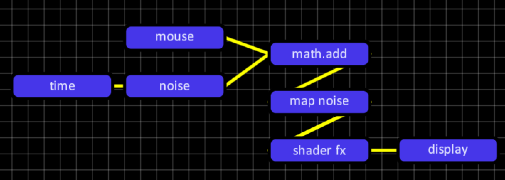
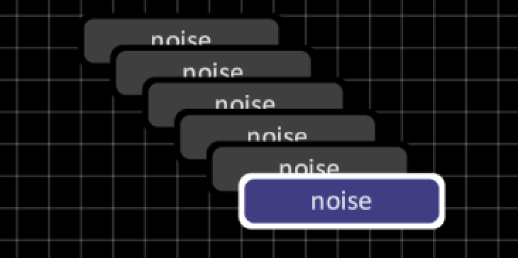

AV Graph
The 'AV Graph' project is an initiative to build a reusable visual node-based editor for various backends. It runs on top of 'framework', a C++ creative coding library. Currently AV Graph ships with a visuals-oriented backend (vfxGraph and vfxNodes) and an audio synthesis backend (audioGraph and audioNodes). The intent is for it to be easily extendible with custom node types, and to be friendly towards creators by allowing the user of the library to freely hack into any part of the editor and/or the provided backends, as well as letting them write their own backends.
AV Graph (working title) embraces the paradigm of dataflow programming. Dataflow programming has been around for ages, and became popular in the creative fields through numerous efforts by media artists and game developers. AV Graph can be compared to environments such as Max/MSP, VVVV, Touch Designer and Blueprints. Contrary to the aforementioned environments, AV Graph makes no assumptions about the use-cases for the editor. It just provides a node-based editor and lets the user decide what to built with it. Also contrary to the aforementioned environments, AV Graph is shipped as a library on top of 'framework', and can be integrated directly into any creative coding apps created with this library, creating a new space for exploration in the field of media art.

AV Graph writes the graph to an XML based format. The 'Graph' object can be used to read this XML description and contains members describing the nodes and socket connections needed to instantiate the backend structure. In addition to the XML interface, AV Graph exposes a real-time editing interface. When implemented, the user's backend gets notified of changes to the graph as it gets edited. The real-time editing facility allows for real-time feedback when making changes to a graph, enabling rapid experimentation and increased creativity.
Below you will find some essential documentation. In case you find an error or an omission in the documentation, or if something isn't very clear to you, please don't hesitate to send me an e-mail at 'marcel303 at gmail dot com'.
Controls
| Space | Toggle folding for the selected nodes. |
| Backspace or Delete | Remove the selected nodes or links. |
| Shift | (Modifier) Append or remove from selection. |
| i | Insert node. |
| ⌘ + a or Control + a | Select all nodes and links. |
| A | Snap to grid. |
| ⌘ + o or Control + o | Reset viewport zoom. |
| ⌘ + shift + o or Control + shift + o | Reset viewport zoom and origin. |
| ⌘ + '+' or Control + '+' | Zoom in. |
| ⌘ + '-' or Control + '-' | Zoom out. |
| d | Duplicate selected nodes. |
| ⌘ + d or Control + d | Duplicate selected nodes with deep copy of input values. |
| p | Switch passthrough on selected nodes. |
| Arrow keys | Move the viewport origin around. |
| Left click socket | Make a new connection from one socket to another. Compatible sockets will light up white while making the connection. |
| Right click link | Add a route point to the link between two sockets. Use this to organize your graphs. |
| Right click socket | Add a persistent visualizer for the socket input or output value. |
| Left click visualizer border | Resize visualizer. |
| Mouse hover | Hover over nodes to get a node description. Each node will display its CPU and GPU processing time. Some nodes also reveal some addition details about their internal processing. |
| Tab | Toggle graph editor visibility. |
| Control + Mouse or Right click + Mouse | Move the viewport origin around. |
| Alt + Mouse (vertical) | Change the viewport zoom level. |
| Touch pad | The graph editor supports pinch to zoom and moving the viewport around using two fingers on the touchpad. |
Press the arrow keys to scroll the viewport around. The viewport will also scroll around when the mouse cursor reaches the edge of the screen when dragging nodes.
Folding nodes
To save workspace and create overview you may wish to fold nodes. When a node is folded its input and output sockets are hidden and the node will take up less space. To fold or unfold a node, press 'space' when the node is selected.
Passthrough mode
Sometimes it's useful to see what happens when a node is disabled, without actually removing it. Press 'p' to toggle passthrough mode. Not all nodes support passthrough mode, but most do. When a node in set to passthrough mode, a 'P' appears in the top-right corner of the node.

Duplicating nodes
Nodes can be duplicated by pressing 'd'. By default, a 'shallow' copy is performed. To perform a 'deep' copy, press ⌘ + d or Control + d. This will also copy the node's input socket values.
Resetting the viewport
Sometimes it's possible to get lost when moving the viewport around. In those cases it may be useful to reset the viewport. The viewport's zoom level can be reset by pressing ⌘ + o or Control + o or ⌘ + 0 or Control + 0. To also resets the origin, press ⌘ + shift + o or Control + shift + o or ⌘ + shift + 0 or Control + shift + 0.